Problema 303 de triánguloscabri |
| Una generalización del problema 137 |
|
Luigi Cremona en el nº 217 de la página 180 de la edición inglesa de su obra nos dice: ".. Y el problema, Trazar una recta por un punto dado que divida un triángulo dado en dos partes cuyas áreas estén según una razón dada. |
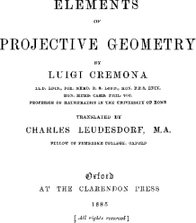 |
|
Propuesto por Jose María Pedret.
|
|
Solución de Francisco Javier García Capitán
Haremos el análisis del problema usando las coordenadas baricéntricas. Seguimos el esquema trazado por Paul Yiu en su Introduction to the Gometry of the Triangle (en adelante Introducción), en la sección 11.4.2, donde se trata el caso particular de que las dos áreas sean iguales. Por conveniencia, en lugar de comparar el área de las dos partes resultantes de la división, compararemos el área del triángulo resultante con el área del triángulo de partida, supondemos que las dos áreas están en la razón m:n.
Sea Y un punto de la recta AC. Existe un único punto Z sobre la recta AB tal que el área (con signo) del triángulo AZY es la fracción m:n del área del triángulo ABC. Hallemos este punto Z:
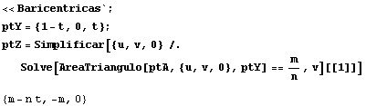
Entonces la ecuación de la recta YZ es
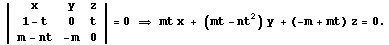
Según podemos ver en el apartado 11.4 de la Introducción, la envolvente de la familia paramétrica de rectas
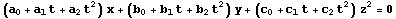
es la cónica de ecuación
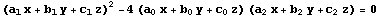
siempre que la matriz
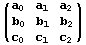
tenga determinante no nulo. En nuestro caso,
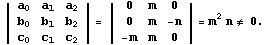
Por tanto la envolvente será:
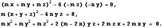
Introduciendo la ecuación de la cónica podemos hallar fácilmente su centro y su discriminante:
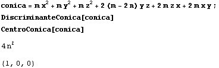
Vemos que se trata de una hipérbola, ya que su discriminante es positivo, y que el centro es el vértice A. Además, los puntos (1 : -1 : 0) y {1 : 0 : -1) cumplen evidentemente la ecuación
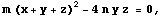
por lo que pertenecen a la hipérbola.
Estos puntos, cuyas coordenadas suman cero, son los puntos del infinito de las rectas AB y AC, respectivamente.
Deducimos que estas rectas son las asíntotas de la hipérbola, y además los ejes de la hipérbola serán las bisectrices exterior e interior del ángulo A. Esto permite hallar los vértices de la hipérbola. Para ello, hallamos los puntos de intersección de la cónica con la bisectriz interior, resultando dos puntos. Si lo intentamos con la bisectriz exterior obtendremos puntos imaginarios.
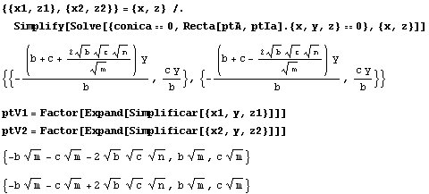
Desgraciadamente, las fórmulas obtenidas para los vértices no son sencillas, pero podemos usar la fórmula del cuadrado de la distancia para hallar la distancia entre ellos:
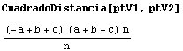
Esto quiere decir que la distancia desde el centro A a cada uno de los vértices V1 y V2 de la hipérbola será
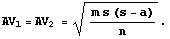
La fórmula que acabamos de encontrar permite la construcción con regla y compás de los vértices de la hipérbola. A partir de ahí podemos encontrar los focos y algunos puntos de la hipérbola, lo que nos permitrá trazar dicha hipérbola con Cabri.
|
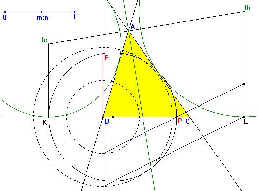 La figura muestra el triángulo ABC y las circunferencias exinscrits (Ib) e (Ic), que tocan a la recta BC en L y K, respectivamente. Sabemos que BK = s-a y BL = s. Usaremos que el semiperímetro s del triángulo ABC y la longitud s-a son fáciles de identificar en un triángulo ABC. En la figura también hemos colocado un deslizador que nos permitirá introducir la proporción m:n. Esta proporción variará de 0 a 1.Lo primero que hacemos es construir un punto P en BL tal que BP:BL = m:n. Ahora bastará hallar la media geométrica de los segmentos BK y BP, es decir un segmento BE tal que BE2 = BP·BK. Para ello hallamos una circunferencia con diámetro KP y hallamos el punto E en la intersección de dicha circunferencia con la perpendicular a KP por B. |
|
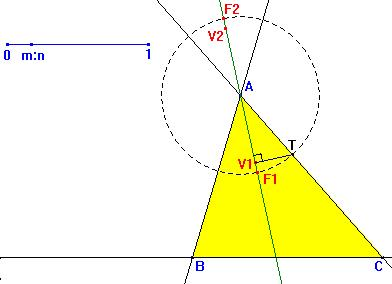 Una vez conocida la distancia AV1 = AV2 = BE, llemamos dicha distancia sobre la bisectriz interior del ángulo A y obtenemos los vértices V1 y V2.A partir de aquí podemos obtener los focos trazando una perpendicular a la bisectriz (eje principal) por uno de los vértices, que se encontrará con uno de los lados en un punto T. La circunferencia con centro A y radio T corta a la bisectriz en los focos F1 y F2 de la hipérbola. Teniendo los focos de la hipérbola basta aplicar el método estándar para hallar algunos puntos de la curva que nos permitan usar la herramienta de Cabri para hallar trazar la cónica que pasa por cinco puntos. |
|
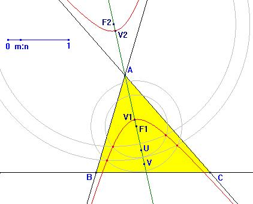 Esta construcción de puntos de la hipérbola se hace tomando puntos arbitrarios U, V, ... sobre el eje focal (la bisectriz en nuestro caso) que no estén en el segmento limitado por los focos. Ahora, con el punto U tomamos los radios UV1 y UV2 y trazamos las circunferencias con centros F1 y F2 respectivamente. Los puntos de intersección de estas circunferencias pertenecerán a la hipérbola.Haciendo la construcción para dos puntos obtendremos cuatro puntos de la hipérbola, que añadidos a los dos vértices que conocemos hacen SEIS puntos, uno más de los que necesitamos. |
|
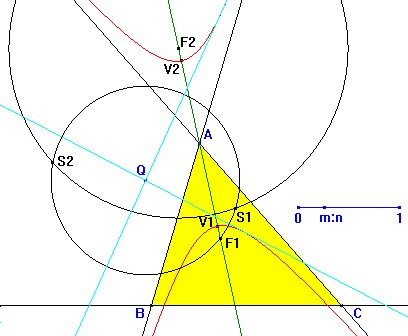 Una vez construida la hipérbola, dado un punto cualquiera P, lo único que tenemos que hacer es trazar a dicha hipérbola la tangente desde Q.Para ello recurrimos a la recta que podemos encontrar en Trazado Geométrico, de M. González Monsalve y J. Palencia Cortés, pág. 253:
|
|
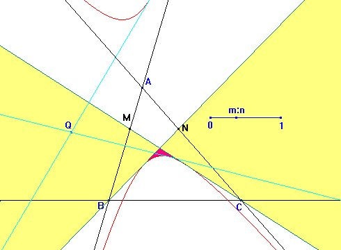 La discusión es parecida a la vista para el problema 137.Como vemos en la figura, las rectas tangentes desde B y C a la hipérbola dividen al plano en cuatro regiones. Cuando el punto Q pertenezca a las regiones sombreadas en amarillo, exactamente una de las rectas tangentes desde Q dará lugar a una solución del problema. Si el punto Q pertenece a la región coloreada en morado, cada una de las dos rectas tangentes dará lugar a una solución. Finalmente si el punto Q pertenece a alguna de las regiones que han quedado en blanco ninguna de las rectas tangentes dará lugar a una solución. |
|
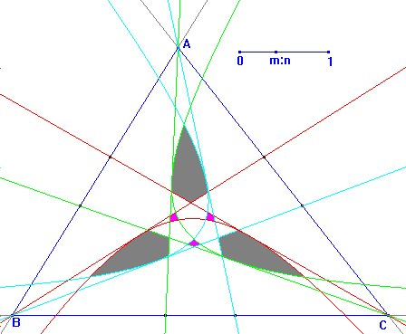 Para finalizar digamos que si el punto Q queda fuera de las regiones con solución, puede intentarse la construcción usando la hipérbola correspondiente a otro de los vértices.Sin embargo, como muestra la figura, puede haber regiones, como las coloreadas en gris en la figura, en las que no se obtengan soluciones con ninguna de las tres hipérbolas, careciendo el problema de solución. Observamos que también hay regiones (las tres marcadas en rosa) formadas por puntos con dos soluciones para dos de las hipérbolas, por lo que en ese caso el problema tendría cuatro soluciones.
|